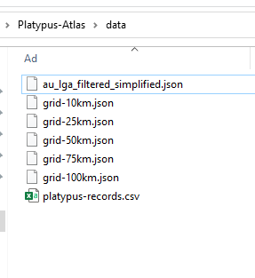

Generate Grid Layers and Local Government Areas Layers
First of all download platypus records from
ala.org.au
then unzip and select the csv file below.
Select Records File(csv)
Make sure the data folder structure should be like that:
